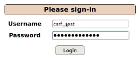

CSRF (Cross Site request forgery)
Consiste fundamentalmente en forzar a que un usuario legítimo que está logueado en una aplicación web realice una acción que ni siquiera sabe que está realizando.
Un CSRF es como si estuviesemos explotando un XSS reflect o stored pero insertando un código que provoca que el usuario realice una acción sobre la web que nos resulte en un beneficio.
Como ejemplos tenemos:
- Forzar que un usuario añada una entrada con el texto que queramos.
- Forzar registros de cuentas.
- Etc
Cuando un usuario visite nuestra entrada de blog, se va a ejecutar por detrás y va a crear una entrada nueva en su nombre.
Interceptamos con BurpSuite.
Codificamos en URL.

Probamos el registro de otra cuenta:
Mismo proceso anterior.
